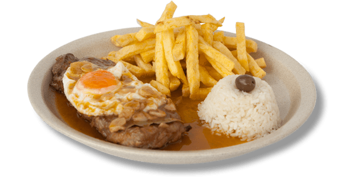

Prego
home

Prego no prato
Is another typical portuguese meal, this time with the classic
steak, chips and egg.
Ingredients
- cook things separately, start with the rice
- then fry some potatoes
- then do the steak, followed by the egg
- this way we ensure at the end everything is still hot